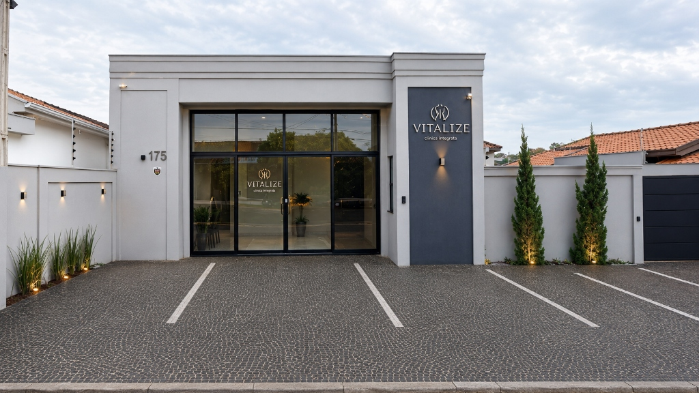

Estratégias simples, funcionais e eficientes que se encaixam no seu dia a dia. Chega de dietas restritivas e metas impossíveis de manter.
Atendimento presencial no Espaço Vitalize em Santa Bárbara d'Oeste ou online para todo o mundo.
Sou nutricionista especialista em emagrecimento e nutrição esportiva, com foco em um atendimento totalmente individualizado.
🎓 Graduação em Nutrição pela Universidade Metodista de Piracicaba (UNIMEP)
🔬 Especialista em Bioquímica, Fisiologia e Nutrição Esportiva pela Universidade Estadual de Campinas (UNICAMP)
Acredito que cada paciente é único e, por isso, todo planejamento é construído de forma personalizada, respeitando rotina, preferências e objetivos.
Meu objetivo é tornar a alimentação algo leve, prático e possível de manter no dia a dia. Aqui, você não vai encontrar dietas restritivas ou impossíveis — e sim estratégias simples, funcionais e eficientes, que realmente se encaixam na sua vida.
Um planejamento estratégico desenhado exclusivamente para a sua rotina.
Avaliação detalhada da sua rotina de treinos, hábitos cotidianos, exames laboratoriais recentes e histórico metabólico.
Construção conjunta do seu plano alimentar com opções flexíveis, respeitando seus gostos e sua rotina de horários.
Suporte direto no WhatsApp para tirar dúvidas cotidianas e realizar ajustes rápidos de planejamento.
A união perfeita entre ciência e praticidade para resultados que duram.
Estratégias sem radicalismo ou exclusão de grupos alimentares. Aprenda a equilibrar sua vida social.
Ajuste fino de carboidratos e nutrientes para você render mais, ganhar massa magra e reduzir gordura.
Receitas funcionais rápidas e substituições práticas pensadas para quem não tem tempo a perder na cozinha.
O que dizem os pacientes sobre o atendimento individualizado da Dra. Letícia.
"Sou cliente da Letícia desde os primeiros dias de seu consultório em SBO e só tenho elogios a fazer. Leticia é uma profissional que nos confronta com a realidade, oferece suporte nos detalhes e caminha ao nosso lado nas mudanças de hábitos."
"A Dra. Leticia é uma excelente profissional. Extremamente atenciosa e dedicada. Desenvolve um trabalho individualizado e personalizado para cada paciente. Não tem dieta pronta. Ela desenvolve um plano alimentar respeitando a particularidade e as preferências de cada paciente. Super recomendo!"
"Amo minha nutri! Adoro como ela monta o cardápio realmente pensando na rotina e nos gostos do paciente. Sou vegana e é a primeira vez que tenho um cardápio legal!"
"Excelente profissional, montou meu cardápio de acordo com os meus gostos e foi super fácil seguir a dieta, que delíciaaa!! maravilhosa ❤️"
"Sou cliente da Letícia desde os primeiros dias de seu consultório em SBO e só tenho elogios a fazer. Leticia é uma profissional que nos confronta com a realidade, oferece suporte nos detalhes e caminha ao nosso lado nas mudanças de hábitos."
"A Dra. Leticia é uma excelente profissional. Extremamente atenciosa e dedicada. Desenvolve um trabalho individualizado e personalizado para cada paciente. Não tem dieta pronta. Ela desenvolve um plano alimentar respeitando a particularidade e as preferências de cada paciente. Super recomendo!"
"Amo minha nutri! Adoro como ela monta o cardápio realmente pensando na rotina e nos gostos do paciente. Sou vegana e é a primeira vez que tenho um cardápio legal!"
"Excelente profissional, montou meu cardápio de acordo com os meus gostos e foi super fácil seguir a dieta, que delíciaaa!! maravilhosa ❤️"
O atendimento individualizado exige um entendimento profundo sobre a sua rotina diária, exames e metabolismo. Por isso, antes de agendarmos seu horário, realizamos uma rápida triagem inicial.
Esse questionário de pré-avaliação nos ajuda a mapear suas principais dificuldades, seus objetivos reais e garantir que o meu método de acompanhamento entregará os resultados duradouros que você procura.
Iniciar Minha Pré-AvaliaçãoO questionário leva menos de 3 minutos para ser preenchido de forma objetiva.
Seus dados nos permitem estruturar a consulta focando na sua meta desde o minuto inicial.
Suas informações são protegidas e usadas exclusivamente pela minha equipe.
Tire suas dúvidas sobre como funciona a jornada.
Atendemos presencialmente no consultório e também de forma online (via teleconsulta), com a mesma entrega clínica e proximidade para qualquer lugar do mundo.
O atendimento é particular, visando mais tempo e profundidade na consulta. No entanto, fornecemos recibos e documentações necessárias para que você solicite o reembolso diretamente ao seu plano de saúde.
Não trabalhamos com dietas de gaveta. O seu plano de metas alimentar é construído na hora da consulta, considerando sua rotina exata para garantir que você consiga executá-lo sem estresse.
A Dra. Letícia realiza seus atendimentos presenciais em uma sala exclusiva e confortável dentro do Espaço Vitalize, uma clínica integrada moderna e de alto padrão em Santa Bárbara d'Oeste.

Clínica Integrada · Sala Privativa
Toque no botão abaixo para falar com a minha equipe no WhatsApp e agendar a sua consulta.